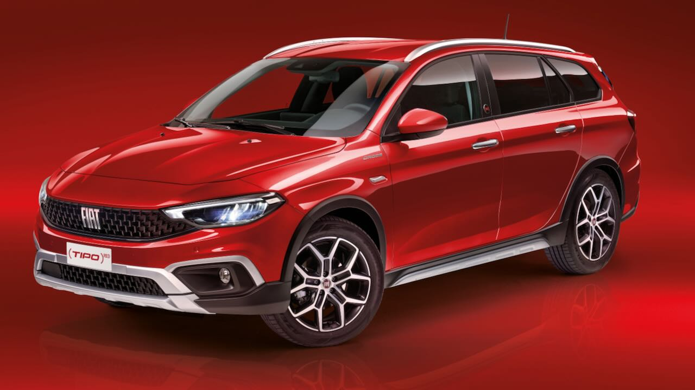

Especificações Técnicas
- Motorização: Opções de 1.0, 1.3 e 1.6 litros
- Combustível: Gasolina e Diesel
- Potência (cv): De 95 a 130 Hp
- Torque (kgf.m): Até 200 Nm
- Transmissão: Manual e Automática
- Consumo cidade (km/l): Aproximadamente 15,6 (Diesel)
- Consumo estrada (km/l): Aproximadamente 22,7 (Diesel)
- Comprimento (mm): 4.368
- Largura (mm): 1.792
- Altura (mm): 1.495
- Distância entre eixos (mm): 2.638
- Porta-malas (L): 440
Segurança
- Airbags frontais e laterais
- Freios ABS com EBD
- Controle de estabilidade e tração
Conforto
- Ar-condicionado automático
- Sistema multimídia com tela sensível ao toque
- Volante multifuncional
